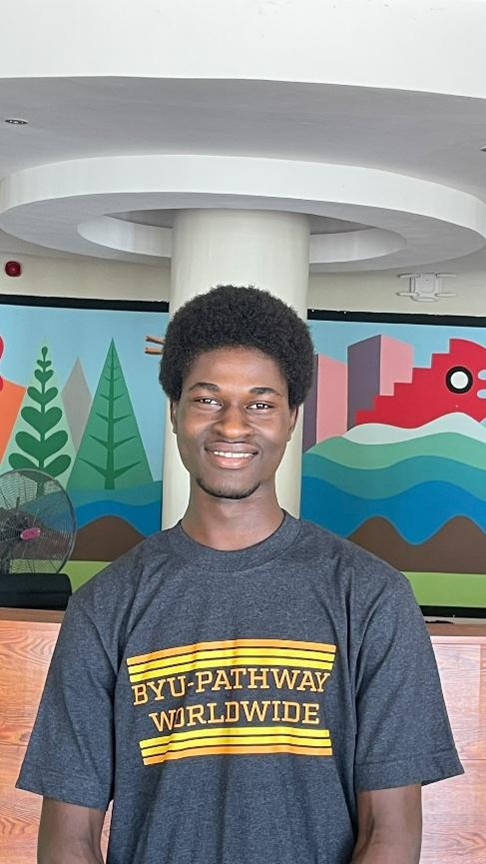

Home
About Me
Hello! My name is Joseph Paul. I am a software development student with a strong interest in technology, programming, medicine, and problem-solving. I enjoy learning how technology works and using it to create meaningful solutions. My goal is to develop my skills in web development and software engineering while continuing to explore the fascinating connection between technology and medicine.
Student Photo

Web Certificate Courses
The total credits for courses listed above is 0